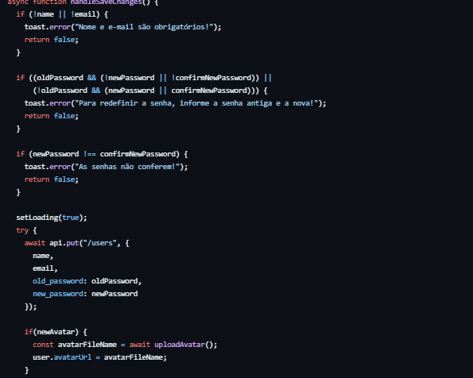

Tela do Usuário
O código é projetado para fornecer uma interface intuitiva para que o usuário personalize suas informações pessoais de maneira segura e eficiente. Ele começa carregando os dados existentes do usuário, como nome, e-mail e avatar, garantindo que o formulário esteja preenchido com as informações atuais. Isso facilita a edição sem a necessidade de reentrada completa dos dados.
A funcionalidade de troca de avatar permite que o usuário selecione uma nova imagem e visualize instantaneamente como ela será exibida antes de confirmar a alteração. Isso é implementado por meio de um preview gerado localmente usando o método URL.createObjectURL. Quando a alteração é confirmada, a nova imagem é enviada para o servidor através de uma API, e o link gerado é associado à conta do usuário.
Além disso, o código verifica se as alterações de senha estão completas e consistentes, exigindo que o usuário informe a senha antiga e a confirmação da nova senha. Caso essas condições não sejam atendidas, mensagens claras explicam o problema, ajudando o usuário a corrigir os erros.
Durante o processo de atualização, o código exibe uma interface de carregamento para indicar que o sistema está processando as mudanças. Isso melhora a experiência do usuário ao evitar incertezas sobre o progresso da operação. Após a conclusão bem-sucedida, as novas informações são armazenadas localmente no navegador, atualizando os dados em tempo real sem a necessidade de recarregar a página. Mensagens de sucesso ou erro são exibidas por meio de notificações, fornecendo feedback imediato ao usuário.
Exemplo do código
Um trecho importante do código é a função que lida com a atualização dos dados do usuário quando ele clica em "Salvar". Essa função começa validando as informações inseridas: verifica se o nome e o e-mail foram preenchidos e confere se os campos relacionados à troca de senha foram usados corretamente, exigindo que a senha antiga seja informada junto com a nova e sua confirmação. Se alguma dessas validações falhar, uma mensagem de erro é exibida, interrompendo o processo.
Caso as informações estejam corretas, a função inicia o processo de atualização, enviando os dados para o servidor via uma requisição à API. Se o usuário selecionou uma nova imagem para o avatar, o arquivo é enviado separadamente e o link da imagem atualizada é recebido e associado ao perfil. Depois que todas as alterações são confirmadas, os dados locais do usuário são atualizados para refletir as mudanças imediatamente, garantindo que a interface fique sincronizada. Além disso, notificações aparecem para informar o sucesso ou falha da operação, melhorando a comunicação com o usuário.
